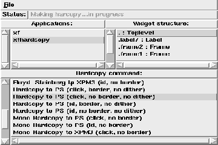

XFhardcopy allows to interactively select Tk applications and path names inside these applications, for dumping to a file. The program uses different external programs to implement the hardcopy commands (xgrabsc 2.1, xwd), and it provides access to the Tk postscript command for canvas widgets (this command is new in Tk 3.0). If the hardcopy commands that come with the distribution do not work or if there exist more appropriate programs, the hardcopy commands can be adapted by the user. This program is part of the XF
distribution, and is used to make hardcopies from the program that is built with XF .

Figure: The xfhardcopy program
The Tk application which should be hardcopied can be selected from the upper left list, and a widget path inside of this application from the upper right list. To make a hardcopy of the selected widget tree (application), one of the hardcopy commands from the bottom list is selected with a double click. By default the hardcopy is written into the current directory under the name ``xfHardCopy''. To specify a different output file name, the hardcopy is made with the menu item named (File | Hardcopy to...).